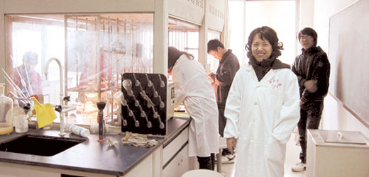

最美石秋杰
她是我校一名普通大学女教师，没有惊天动地的壮举，却用生命诠释着师者的崇高与风范。
她爱事业，14年来，虽经过三次大切除手术、几十次化疗、放疗，但从没有因为治疗耽误过给学生的授课，从没有因为病痛放松过对科学的追求。
直到去世前的一个月，还去实验室指导学生实验；在去世前的48小时，她还争分夺秒地为她的研究生修改毕业论文。
她爱家庭，爱生活，在家里她是一个好妻子、好媳妇、好大嫂、好妈妈。她的家庭幸福而温馨。
然而，关于她的病情，除了她爱人，没有人知道，她为了不让同事、亲友知道，2008年之前连医药费都不报。
她用平凡短暂的生命塑造了完美的一生，以病弱之躯的微弱之火，照亮着生命的每一寸土地。
永生的“博导妈妈”——大爱大美石秋杰
剧组是从7月初就开始酝酿、编剧、排演，所有参演的老师和学生都非常投入，都为石老师的精神鼓舞着，激励着。谢蓉老师是剧中石秋杰老师的扮演者，为了更好把握人物，谢蓉老师假期里看了很多关于癌症的电影，了解癌症患者的心理和承受的痛苦。
谢蓉老师还充分发挥了自己心理咨询师的优势，反复揣摩石老师临终前的心理活动。
三位饰演石老师学生的播音与表演系的同学，尽管之前有过不少舞台表演的经验，但在最初拿到剧本时，还是感到很大的压力，开始的表演也很外在，慢慢进入情境之后，再从每一个动作、每一句台词上下功夫，力争做到完美。